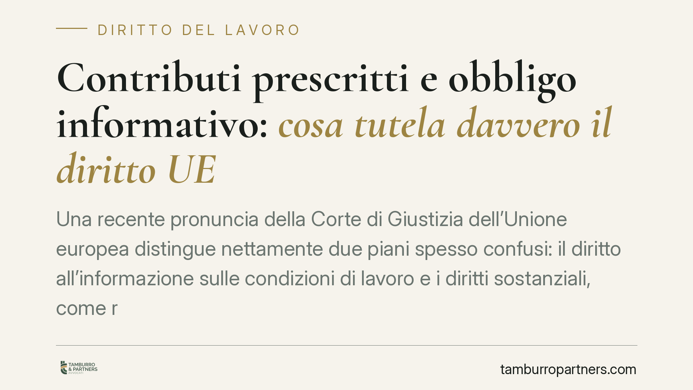

Contributi prescritti e obbligo informativo: cosa tutela davvero il diritto UE
Una recente pronuncia della Corte di Giustizia dell'Unione europea distingue nettamente due piani spesso confusi: il diritto all'informazione sulle condizioni di lavoro e i diritti sostanziali, come retribuzione e contributi. Il primo non congela la prescrizione dei secondi. Per il lavoratore con contributi prescritti la partita si gioca altrove: sull'art. 2116 c.c. e sulla rendita vitalizia.

Il fatto
La questione nasce da un rapporto di lavoro in cui il dipendente lamentava contributi previdenziali non versati e ormai prescritti. Davanti al giudice italiano si è posto un interrogativo cruciale: l'obbligo del datore di informare il lavoratore sulle condizioni essenziali del rapporto può incidere sulla prescrizione dei diritti contributivi, di fatto rimettendoli in gioco?
La Corte di Giustizia dell'Unione europea, investita in via pregiudiziale, ha risposto con una distinzione netta. La disciplina europea sull'obbligo informativo protegge il *diritto all'informazione* del lavoratore. Non trasforma quel diritto in uno scudo che sospende o azzera i termini di prescrizione dei diritti sostanziali, quali la retribuzione e i contributi. Questi ultimi restano regolati dal diritto nazionale.
*Nota sugli estremi: il riferimento puntuale alla causa è in corso di verifica presso le fonti ufficiali della Corte e va confermato prima di ogni utilizzo processuale.*
Inquadramento normativo
L'obbligo informativo trova oggi fondamento nella direttiva (UE) 2019/1152, relativa a condizioni di lavoro trasparenti e prevedibili, che ha abrogato la precedente direttiva 91/533/CEE. In Italia il recepimento è avvenuto con il d.lgs. 104/2022 (cosiddetto "decreto trasparenza"), che ha ampliato il set di informazioni da fornire al lavoratore all'avvio del rapporto.
È importante non confondere i piani. Questa normativa impone al datore un obbligo di comunicazione trasparente. Non crea, però, un meccanismo di protezione dei crediti retributivi o contributivi contro il decorso del tempo.
La prescrizione dei contributi previdenziali è disciplinata dall'art. 3, commi 9 e 10, della l. 335/1995, che fissa il termine ordinario in cinque anni. La materia conosce eccezioni e regimi transitori legati a specifiche gestioni e a domande presentate entro determinate finestre temporali: la verifica va quindi fatta sul caso concreto, gestione per gestione.
Una volta maturata la prescrizione, il versamento non è più dovuto né accettato dall'ente. Ed è qui che si apre il vero problema per il lavoratore.
Implicazioni pratiche
La pronuncia chiude una via e ne conferma un'altra. Il lavoratore non può sperare che il difetto o l'incompletezza dell'informativa "riapra" i termini contributivi. Il tempo perso resta perso, sul piano contributivo puro.
Restano però due strumenti sostanziali, che la Corte non tocca perché appartengono all'ordinamento interno.
Il primo è l'art. 2116 c.c.: quando l'omesso versamento è imputabile al datore e i contributi non sono più recuperabili per prescrizione, il lavoratore può chiedere al datore il risarcimento del danno per la perdita, totale o parziale, della prestazione previdenziale.
Il secondo è la rendita vitalizia ex art. 13 l. 1338/1962. Il datore può costituire presso l'INPS una rendita che riproduca la posizione previdenziale che il lavoratore avrebbe avuto se i contributi fossero stati versati. In alternativa, e a certe condizioni, la costituzione può essere richiesta dallo stesso lavoratore, con successiva rivalsa.
Il ruolo della prova
Qui si gioca la partita decisiva. Chi agisce ex art. 2116 c.c. o per la rendita vitalizia deve dimostrare l'esistenza del rapporto di lavoro, la sua durata e la misura della retribuzione nei periodi scoperti.
L'onere probatorio grava sul lavoratore. Non basta affermare di aver lavorato: occorrono elementi documentali o testimoniali che consentano di ricostruire con precisione i periodi e gli importi. Buste paga, contratti, comunicazioni di assunzione, estratti conto, corrispondenza e testimonianze diventano il cuore della causa.
È un punto spesso sottovalutato: senza una prova solida dei periodi e delle retribuzioni, anche il rimedio sostanziale rischia di restare sulla carta.
Cosa fare in concreto
- Richiedere l'estratto conto contributivo INPS e individuare con precisione i periodi scoperti e le date di eventuale prescrizione.
- Recuperare la documentazione del rapporto — contratti, buste paga, comunicazioni obbligatorie — per provare durata e retribuzione dei periodi non coperti.
- Valutare la via dell'art. 2116 c.c., verificando l'imputabilità dell'omissione al datore e quantificando il danno previdenziale.
- Esaminare la costituzione della rendita vitalizia ex art. 13 l. 1338/1962, come rimedio ricostruttivo della posizione previdenziale.
- Curare tempestività e prova: è opportuna una verifica anticipata della posizione, perché anche le azioni risarcitorie hanno propri termini e reggono solo su una documentazione completa.
---
Contributo informativo a cura di Tamburro & Partners - Avv. Giuseppe Tamburro. Non costituisce parere legale.
Ogni storia di lavoro ha i suoi tempi.
Se gestisci HR e vuoi un confronto su contenzioso, ispezioni o licenziamenti, scrivi allo studio. Ti rispondiamo entro un giorno lavorativo.